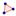

Polygon[Point A, Point B, Point C,...]: Returns a polygon defined by the given points A, B, C,…
Polygon[Point A, Point B, Number n]: Creates a regular polygon with n vertices (including points A and B).
Note: Also see tools  Polygon and Regular Polygon